Price Tracker: a visual refresh
I tidied up the look of my free Australian price tracker without changing how it works. Drag each slider to compare the old version (left) with the new one (right).
The whole page
All the changes together, at the same screen size.
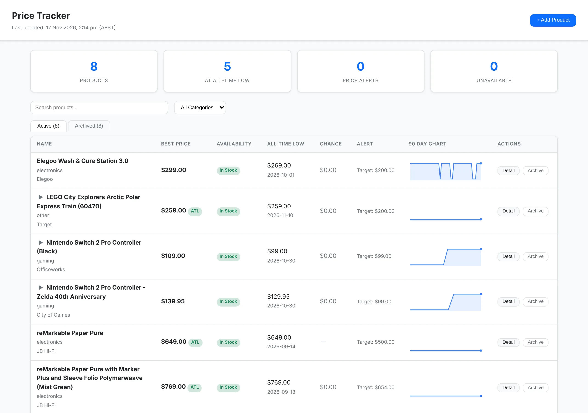
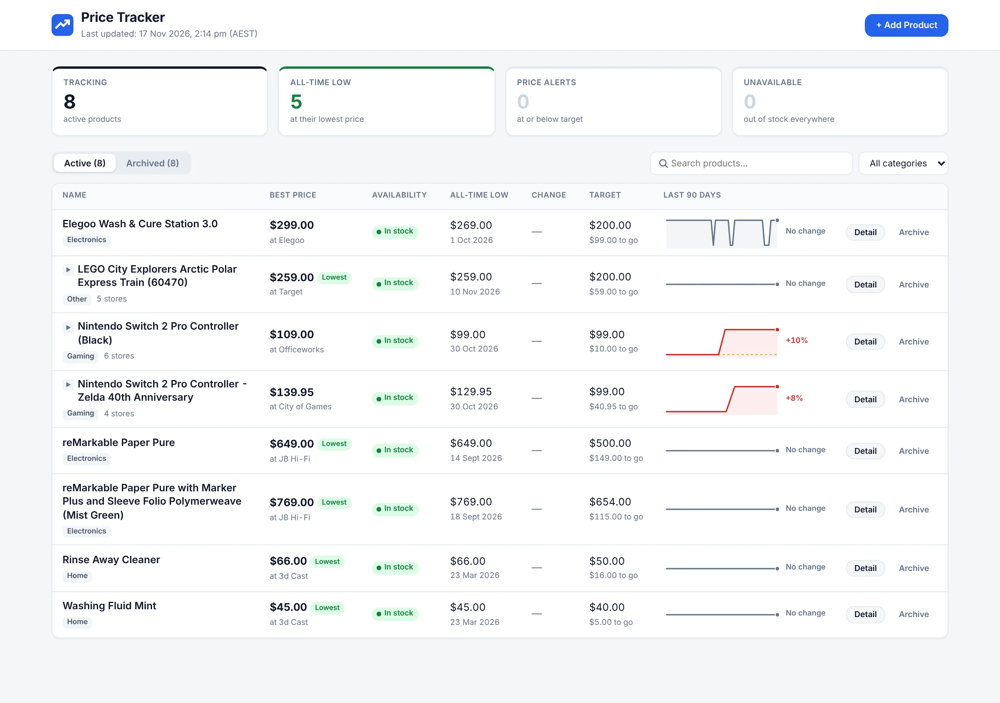
Before After1Header and summary cards
Every number used to be the same blue, so "0 alerts" looked as important as "5 at all-time low".
- The header now lines up with the content below it, and has a small logo.
- Each card has its own colour: green for all-time lows, amber for alerts, red for unavailable.
- Cards showing zero are greyed out, so the ones that need attention stand out.
- A short line under each number explains what it counts.

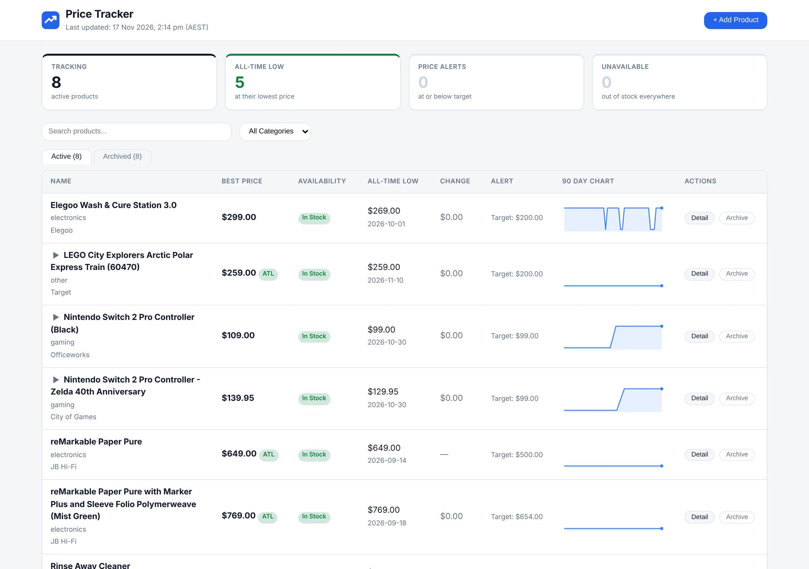
Before After2One toolbar
The search box, category filter and Active/Archived tabs were on two separate rows. Now they share one.
- The Active/Archived tabs are now a toggle switch on the left.
- Search and category sit on the right, and the search box has a magnifying-glass icon.
- Input boxes get a blue outline when you click into them.

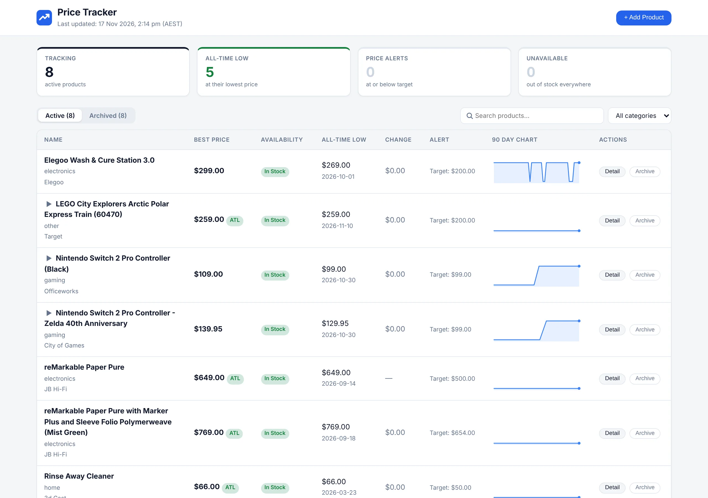
Before After3Shorter, clearer product rows
Each row was three lines tall, and the Change column said "$0.00" on almost every product. Now all 8 products fit on one screen.
- The category is a small tag, with the number of stores next to it.
- The cheapest store now sits under the price ("at Officeworks") instead of under the name.
- The Change column shows a dash when nothing changed, and ▲/▼ in red or green when something did.
- The Target column also says how far away you are, e.g. "$10.00 to go".
- Dates read "30 Oct 2026" instead of "2026-10-30".

 Before
After
Before
After
4Sparklines that show direction
Every 90-day mini chart was blue, so you couldn't tell a price rise from a price drop at a glance.
- The line is green if the price went down over 90 days, red if it went up, and grey if it didn't change.
- The % change is shown next to each chart.
- A dashed amber line marks your target price when it falls inside the chart.
- Products whose price never changed show a plain centred line.
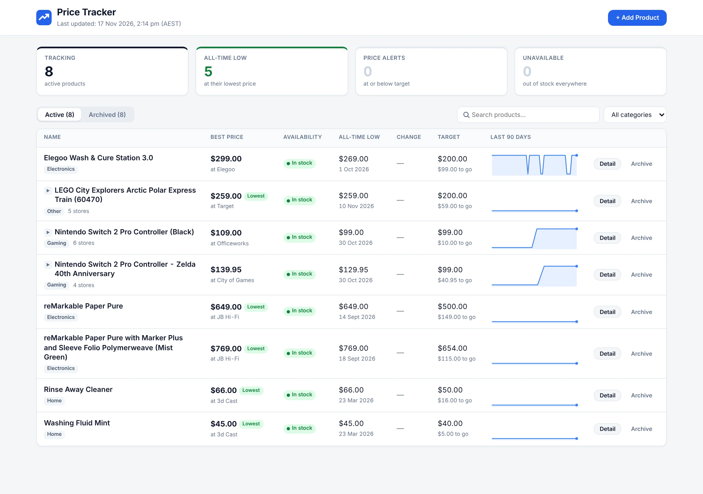
 Before
After
Before
After
5Retailer breakdown
When you expanded a product, stores where the scraper hadn't found a price still said "In Stock". That was wrong.
- Stores are sorted cheapest first, and the best one gets a green "Best" tag and a green edge.
- Stores with no price now say "No price found" in grey.
- Store links look like the rest of the page and have a ↗ to show they open the store's site.
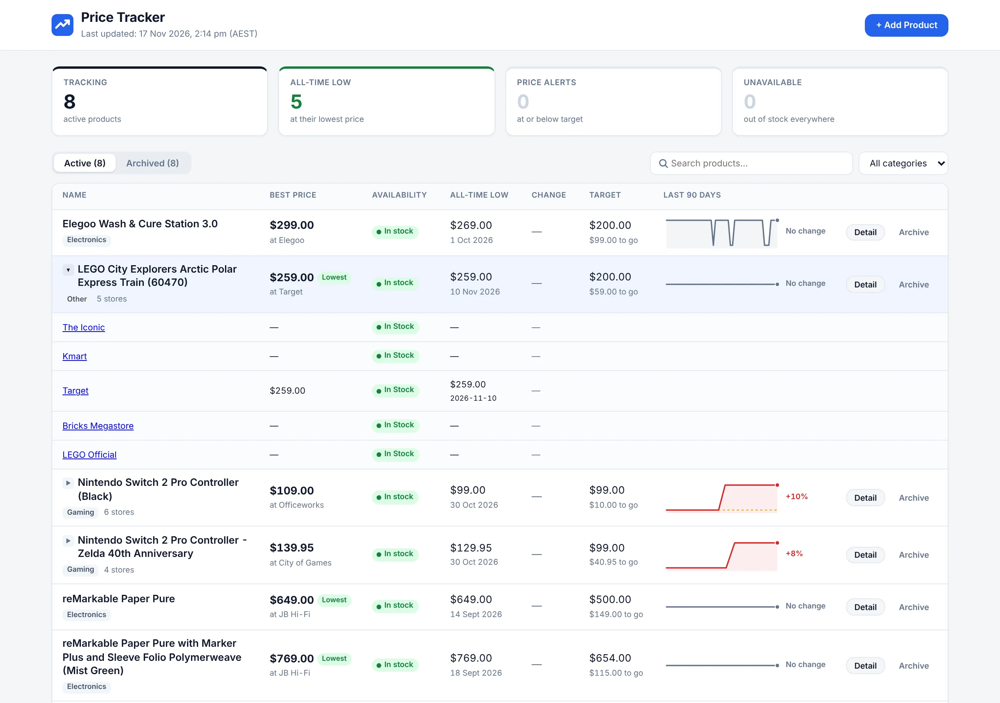
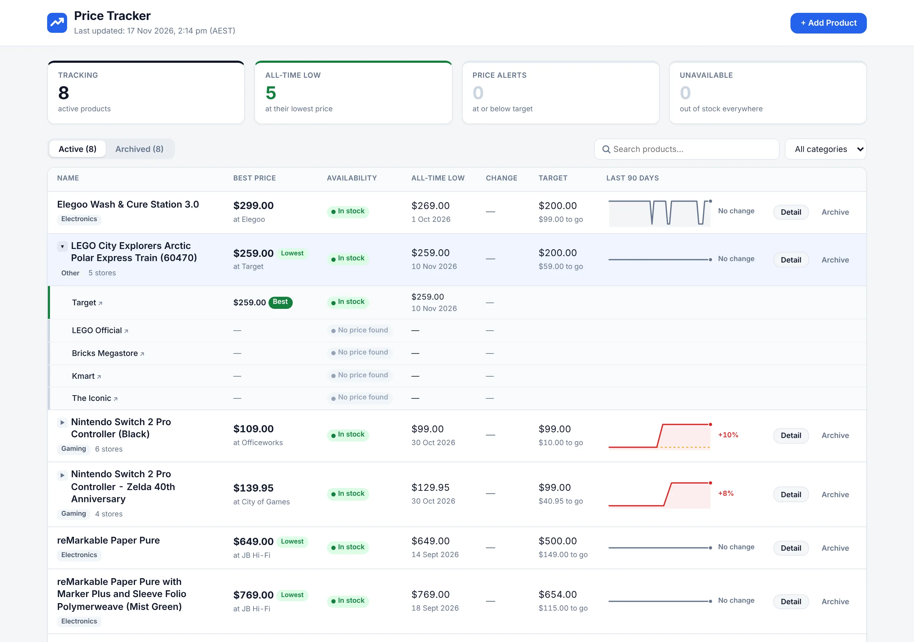
Before After6Price history chart
The detail chart had a dot on every day, tilted date labels, and prices to the cent on the side.
- Three boxes at the top show the best price, all-time low and target.
- A clean line with no dots; a dot only appears when you hover over a day.
- Dates read "19 Oct", prices on the side are whole dollars, and the background grid is lighter.
- The target line's label now includes the amount, e.g. "Target $200.00".
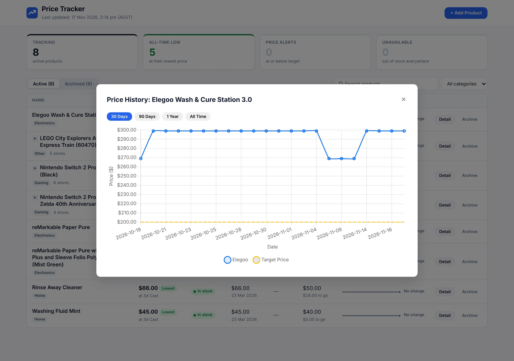
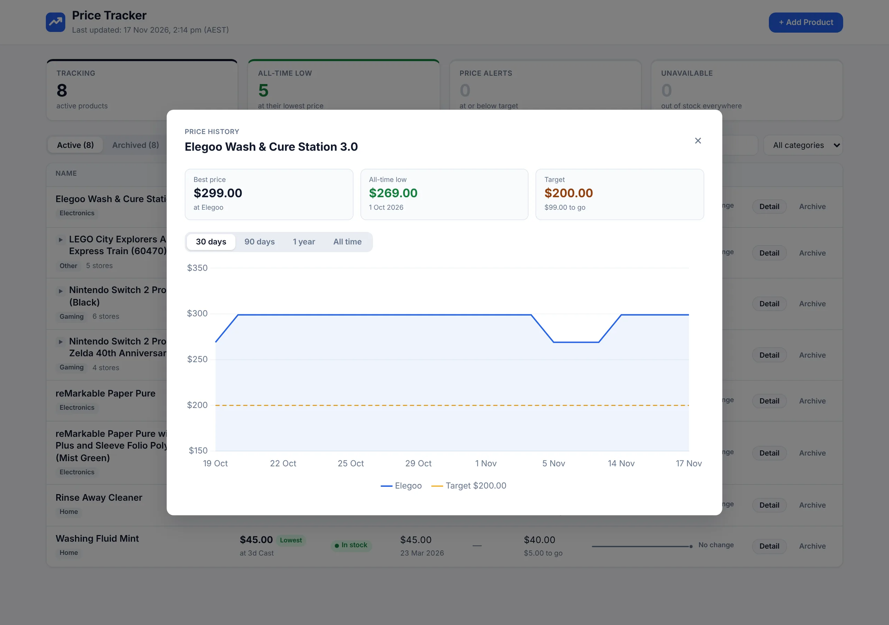
Before After7Cards on mobile
On a phone, the table was cut off after three columns. Now each product is its own card.
- Each card shows the price, stock, all-time low, target, the 90-day sparkline and full-width buttons.
- The store breakdown expands as small cards under the product.
- The header stays on one line.
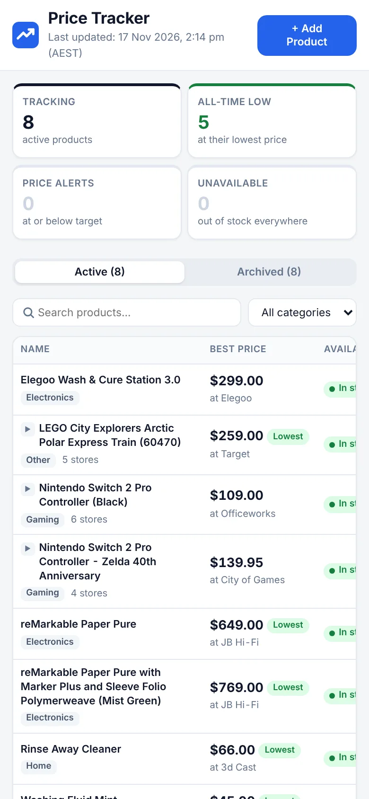
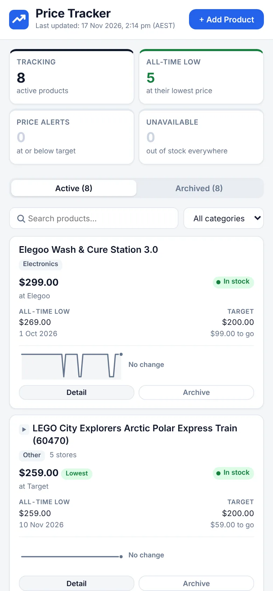
Before After